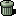
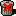

In MetaCat's Category Manager, you will find a form to create a new category. Simply enter a title and a description, submit the form, and a new top-level category will be created.
At the top of the Category Manager, you see a map of all existing categories and installed modules. Here you can activate a category for use in a module or deactivate it.
To activate a category in a module, simply click on the icon right of the category name and under the module name. If there is no icon shown, this means the category can't be activated in that module, most likely because it is a sub-category and the module supports only one level of categories.
To deactivate a category in a module, click on the corresponding  icon. If the Icon is marked with an , this means the category can't be deactivated, most likely because it has active sub-categories or because it has content in that module. To remove a category like that, first remove or move all content and deactivate all sub-categories.
If you click on the "edit" link for a category, you can change a number of details for that category:
This allows you to change the title and description of the category. Just enter the new information and submit.
You can move a category to a different place in the hierarchy. Just select the new parent category in the drop-down list and submit. MetaCat will check if the new parent is "valid" and make the change.
A category can't be moved to a new parent if
the new parent is a child of itself, or
the category is active in a module that doesn't support sub-categories.